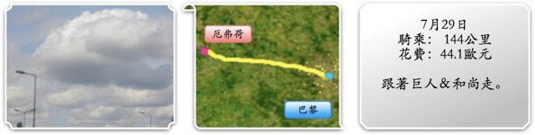

早上天氣好好，但有一種莫名的惆悵，大概是要出獄的緣故吧，關了兩天有點捨不得走。
捨不得牢裡有創意的伙食，捨不得牢裡充滿藝術氣息的佈置以及聰慧貼心的管理員。
打起精神早餐吃了牛奶水果麥片粥+綠豆意仁湯，檢整裝備後，該上路了。
別了∼健康監獄，雖然你的城牆高的難以攀爬，但柏林圍牆都會倒，總有一天監獄也會變公園的。
十點四十出發，地圖也甭看了。
看到的第一個路標是D907，路標上的城市沒一個認識的，但箭頭往西，就跟著去吧。
騎著騎著就離開了巴黎，小麥田再度出現，茂密的森林，無限延伸的道路，還有一望無際的地平線。
夸父追日往西跑，三藏取經向西行，那就跟著夸父的腳丫子和三藏的袈裟走吧。
第一次沒有目標的騎著車，哪有路就往哪走，遇到高速公路就避開，筆直的向西前進。
聽音樂覺得有點吵，真是難得，那就關掉iPod改聽風聲吧。
沒有音樂騎著車，其實沒有預料的那麼無聊，不知不覺的騎，也忘了休息，忘了拍照。
等停下了腳步覺得夠了，喘一口氣後才發現，騎了一百四十幾公里了。
這點距離要思念嫌太近，要見面又嫌太麻煩，等再騎遠一點，就不會那麼想念了吧。
這是什麼果樹來著？酪梨嗎？
往西，即使走到路的盡頭還是堅持往西。
今天的風好涼，雖然它是逆風，但又如何？逆風吹起來比較涼快，有多大吹多大吧∼！
D907走著走著偏離了往西的軌道，換走D321，天空的雲看起來白白的向特大號的棉花糖。
希望繼續保持這樣的好天氣，別又下雨，祈禱氣象報導不準。
一祈禱就壞了事，我不是虔誠的教徒，還有樣學樣的祈禱，該來的還是來了，下午兩點，雨嘩啦啦的下。
能下你就下吧，雨衣也懶得穿了，反正頂多下個十分鐘就會停了。
（十分鐘之後）淋雨好涼快呀，賭你下不過半小時。
（半小時後）哇∼老天你還真是能下，多謝你幫我降溫，再多來一點吧。
（一小時後）怎麼停了？我還沒淋夠呢？
窗台上的七個小矮人跟白雪公主，少了一個大概被小孩拿去玩了∼

雨停之後到一個小小鎮，雖小但有戲院呢∼
今年暑假檔的電影都沒什麼強片可以期待，有點寂寞的暑假。
去麵包店點了跟臉一樣大的心型派酥，在台灣都吃盒裝的餅乾，沒吃過手工現做的。
我點一個，老闆娘兩個都包給了我，是買一送一嗎？
不，一個1.3歐元，兩個就是2.6。請老闆娘幫忙裝水瓶的水。
不變的逆風，不變的下雨，換個心情去體驗，其實沒那麼糟糕呀。
不過是吹吹風下下雨，又有什麼大不了，就算是爆胎，又怎樣呢？
換一個內胎便是，不然買五個放在包包裡幹嘛，買了就是要用的咩。
純熟的技巧，10分鐘搞定一個後輪，要是快一點把內胎都爆光，那又可以回巴黎補給了∼
下午四點多，騎了六個小時，覺得夠本了，目前最接近自己的城市是『EVREUX』，還有39公里。
也不知道是多大多小的地方，沒出現在規劃停留的名單裡，去參觀參觀吧。
到了之後發現道路挖的坑坑洞洞，有些失望，似乎不是美麗的城市。
但是有旋轉卡通木馬
哈利波特的霍格華茲學園
侵蝕了房屋的天空
裝飾的很華麗但始終沒有人可以諮詢的旅遊諮詢中心
中文居然排在最後？比變形蟲字還後面，字體也是介於簡體和繁體之間。
市中心是小孩的遊樂園，有攀岩、超大的充氣溜滑梯，跟這個彈簧盪鞦韆。
等我頭髮長一點，頭巾包不住的時候，考慮在法國剪個頭髮，時尚一下。
晚餐隨便找了一家KEBAP點了份小薯就算是解決了。
店裡面還沒有開始烤的雞肉串，看起來蠻恐怖的 =.=//
住宿在法國旅社的22號房，二星旅館，40歐元
我說能不能算便宜一點，店員說聽不懂我的意思。
殺價失敗，拿了約400公克的各式口味糖果、巧克力（放在櫃台給客人吃的）當點心。
明天離開時再拿個半斤路上解嘴饞。
FCR1停在旅館附設的停車場裡，今天所有的包包又回到了它身上，辛苦了。
相當平淡的又過了一天，追到了太陽也追到了雨，翻開地圖，逐漸接回設定的路線中。
精神恍惚的效果，是騎車居然不會累。就好比看別人騎車般輕鬆。
若是可以的話，請法官讓我關久一點，判我一個無期徒刑。